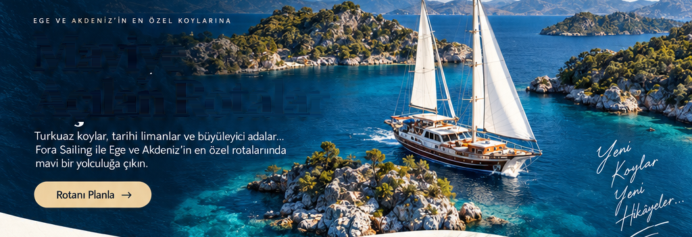
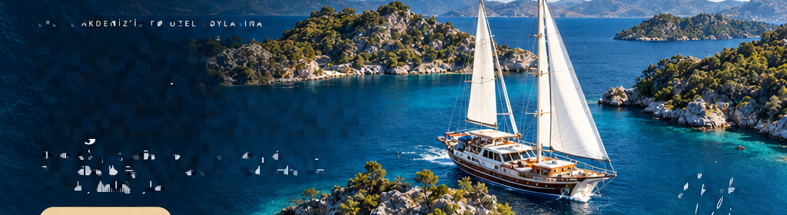
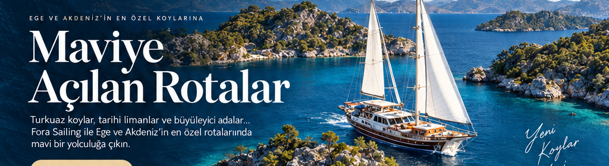
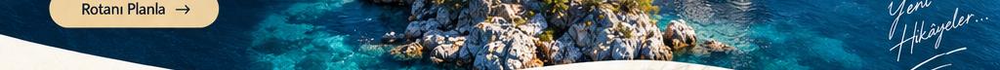
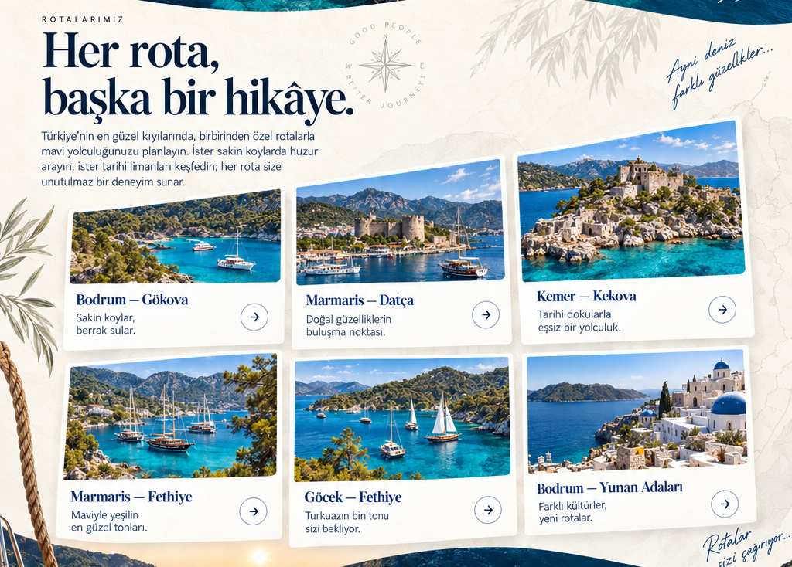
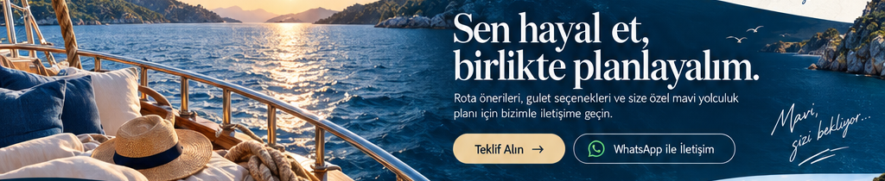
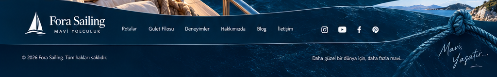

EGE VE AKDENİZ’İN EN ÖZEL KOYLARINA
Maviye
Açılan Rotalar
Turkuaz koylar, tarihi limanlar ve büyüleyici adalar. Fora Sailing ile Ege ve Akdeniz’in en özel rotalarında mavi bir yolculuğa çıkın.
Rotanı Planla →ROTALARIMIZ
Her rota, başka bir hikâye
Türkiye’nin en güzel kıyılarında, birbirinden özel rotalarla mavi yolculuğunuzu planlayın.
Sen hayal et,
birlikte planlayalım.
Rota önerileri, gulet seçenekleri ve size özel mavi yolculuk planı için bizimle iletişime geçin.
Teklif Alın →WhatsApp ile iletişim





Maviye Açılan Rotalar
Turkuaz koylar, tarihi limanlar ve büyüleyici adalar. Fora Sailing ile Ege ve Akdeniz’in en özel rotalarında mavi bir yolculuğa çıkın.
Her rota, başka bir hikâye
Bodrum–Gökova; Marmaris–Datça; Kemer–Kekova; Marmaris–Fethiye; Göcek–Fethiye; Bodrum–Yunan Adaları.
Sen hayal et, birlikte planlayalım
Rota önerileri, gulet seçenekleri ve size özel mavi yolculuk planı için bizimle iletişime geçin.